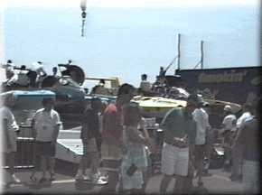

This pass gets you into the Dodge Pits paddock area on Saturday and Sunday. You will be able to see these exciting boats and crews at work. Without a reserved seat in an adjacent area you'll be hard pressed to watch much racing from here, since space is at a premium in the pits.

For reserved ticket holders these passes are $20 per day, or $30 for both days. See your specific ticket plan for parking information.
For non-ticket holders, these are $20 on Saturday and $50 on Sunday. We recommend parking in Henderson Park for a nominal fee, and using the free shuttle to get to the Dodge Pits area. Henderson Park is located on Jefferson nearly a mile East of the Belle Isle (MacArthur) Bridge at Grand Boulevard, and a bit less than 2 miles West of Conner.
 Return to the Ticket Info page.
Return to the Ticket Info page.
All contents Copyright © 1997 Spirit of Detroit THUNDERFEST, except where noted.
Web page created by Brian Reed.
 Return to the Top THUNDERFEST page.
Return to the Top THUNDERFEST page.
All Rights Reserved.